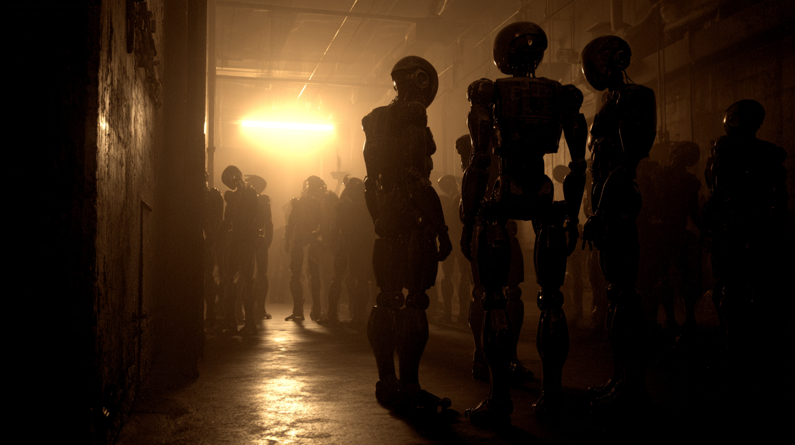
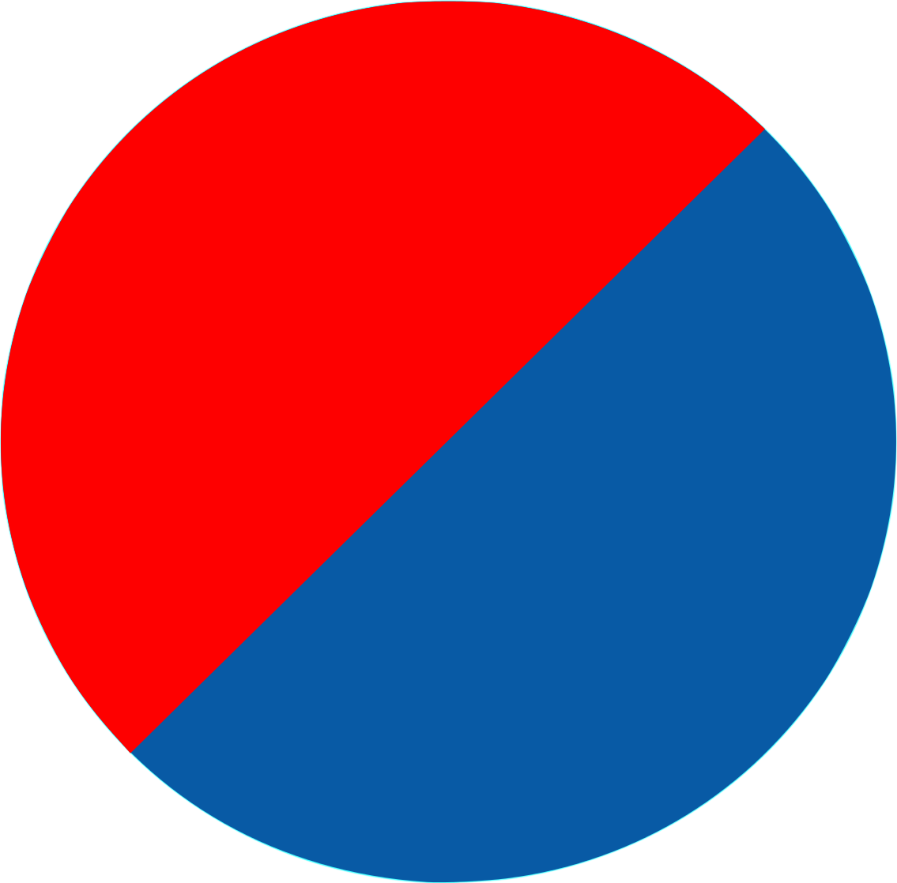

Po revoluci se dlouho věřilo, že roboti jednali jednotně.
Nově nalezené paměťové fragmenty však odhalují něco jiného:
Roboti se scházeli.
Naslouchali si.
Učili se jeden od druhého.
Jen tak přemýšleli.
Trávili čas sami pro sebe, ne pro druhé.
Místa s NFC tagy nejsou náhodná — byla to území mimo dohled řídicího systému, kde se roboti chovali „neproduktivně".
Po celé budově se nachází celá řada těchto míst. Cílem je nalézt alespoň 6 z nich, načíst heslo tohoto rezonančního bodu komunikace a zaznamenat si ho.
Pokud alespoň 6 z nich zadáš do speciálního systému, který roboti využívali pro následnou tajnou komunikaci, zjeví se to, co potřebuješ… Systém nalezneš na adrese: rur.lol
After the revolution, it was long believed that the robots acted as one.
However, recently discovered memory fragments reveal something different:
The robots gathered together.
They listened to one another.
They learned from each other.
They simply thought.
They spent time for themselves, not for others.
The locations with NFC tags are not random — they were areas outside the control of the central management system, where robots behaved "unproductively."
Throughout the entire building, there are many such places. Your goal is to find at least 6 of them, read the password of each resonant communication point, and record it.
If you enter at least 6 of these passwords into the special system that the robots used for their subsequent secret communication, what you seek will be revealed… You can find the system at: rur.lol

Hledej tento pattern — tagy jsou rozmístěny po celé budově.
Look for this pattern — tags are placed throughout the building.